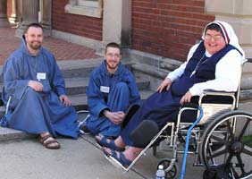

Bro. James Receives the Pro Fidelitate et Virtute Award
| On April 22, 2006, Bro. James Curran, l.b.s.f., received the Pro Fidelitate et Virtute Award from the Institute on Religious Life in the Chicago area. Brother James, the founder of the Little Brothers of St. Francis, was selected as this year's awardee in recognition of his fine example in faithfully living out his vocation to the religious brotherhood, and for his multifacted contributions to the mission of the Institute on Religious Life since its early years. Below are some remembrances of that event. |
Receiving the award from Most Rev. Thomas G. Doran. |
|
Most Rev. Joseph Perry and others congratulate Bro. James. |
Bro. James and Bro. O'Donnell, F.S.P. |
Bro. James making friends with a group from St. Paul, MN. |
The brothers make themselves at home during the youth session. |
 |
|